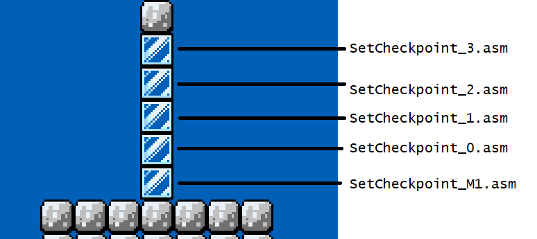

Respawn to last checkpoint (without reloading the level)
By GreenHammerBro
Not to be confused to SMW's midpoint system, as that are used when the player returns to the overworld map by dying or START+SELECT and also the “retry patch”.
As those resets the level upon returning.
This ASM gimmick installs a “player recall” system similar to in the game Legend of Zelda series when you fall into a bottomless pit or the game Hollow Knight when touching the spikes. When this happens,
the level isn't reset, merely warping the player back to the last position. This is to solves the problem with designing obstacles when making levels, the maker have only two decisions:
- Make these obstacles an instant-kill. Often frustrates the player for losing potentially lots of progress.
- Make these obstacles only a damage (not always a kill). This often have an exploit of “damage boosting” (the act of the player trying to get through them while being invulnerable between each damage).
This works by when the player touches a checkpoint block, it sets the destination coordinate to warp to. And when the player hits a warp block (or executes a code that sets a RAM used by this gimmick if you are non-block warps), the player will
freeze for a few frames, then turns invisible and be dragged back to the checkpoint that is being set. During the drag-player, $9D is being set to prevent potential interactions with the sprites and the player will
ignore all block interactions.
Notes
- If you try to warp the player without setting the destination coordinates first, depending on what RAM you're using, you'll be sent to the top-left corner of the level (XPos:$0000 YPos:$0000) or to a random spot (including outside the level
boundaries and dying). Therefore make sure it isn't possible to trigger the warps without setting the checkpoints. This can be fixed by simply placing the destination warp blocks where the player spawns in every level that uses the wraps.
Level placements
The blocks to set the warp destination are sorted as columns like so:
